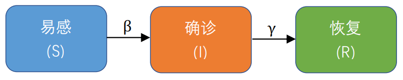

数据选择
模型构建
|
|
||||
| 新建 |
| 模型: |
|


|
| 参数: |
| 感染率 β: | ||
| 康复率 γ: | ||
| 潜伏者康复率 γ1: | ||
| 确诊者康复率 γ2: | ||
| 发病率 σ: | ||
| 死亡率 δ: | ||
| 潜伏者死亡率 δ1: | ||
| 确诊者死亡率 δ2: | ||
| 传染率下降 μ: | ||
| 初始易感比例 S0: | ||
| 初始潜伏比例 E0: | ||
| 初始感染数 I0: | ||
| 初始确诊数 J0: | ||
| 初始恢复数 R0: | ||
| 初始死亡数 D0: |
模型输出
| 数据来源: | A | B |
| 数据计量: | ||
| 数据比较: | ||
| 数据显示: | 绝对值 | 百分比 |